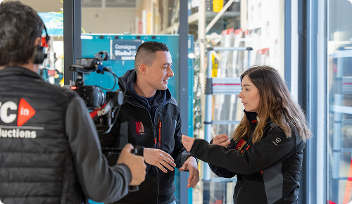

Épisode 1
Prolonger le carrelage de la cuisine jusqu’à la terrasse
Ce premier épisode a été tourné chez Gedimat Matériaux Picard à Montdidier.Le défi rénovation est ici un double défi : prolonger le carrelage de la cuisine vers la terrasse, tout en créant une transition harmonieuse entre carrelage et bois.
Le défi est lancé par Matthieu, le présentateur de Ma Maison de A à Z, à Paulo & Lulu. Pour y répondre, Paulo s’appuie sur l’expertise d’Arnaud, vendeur conseil chez Gedimat Matériaux Picard de Montdidier. Ensemble, ils identifient la solution la plus adaptée grâce aux plots réglables Jouplast et à la lambourde aluminium Profildeck, conçue pour accueillir aussi bien le carrelage que le bois, selon son orientation.
Dans cette vidéo, découvrez :
- les questions posées pour bien comprendre le projet,
- le choix des produits en magasin,
- et la mise en œuvre étape par étape, jusqu’au résultat final.
Une démonstration concrète de l’accompagnement Gedimat, du conseil en magasin à la réalisation du projet.
